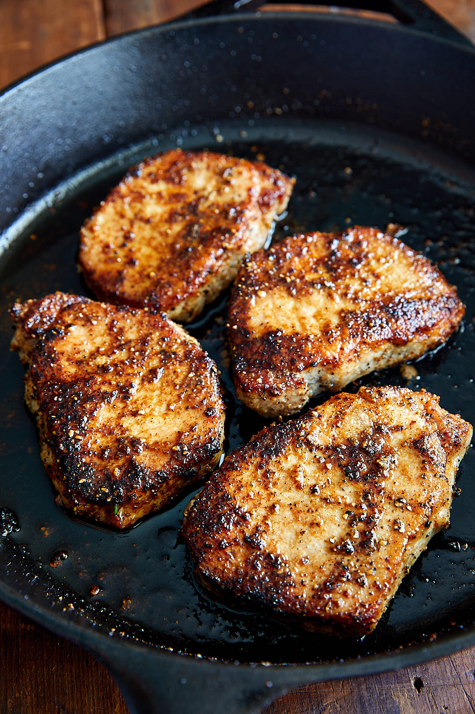

Dad's Famous Pork

Easy, Mouth-watering Pork Chops
Sometimes the best food is the simplest. This is very true about pork chops. In our family
we like to try different ways of preparing pork chops, like the Southern Fried Pork Chops,
Broiled Pork Chops or Smothered Pork Chops, but simple salt and pepper pan-fried boneless
pork chops are our favorite by far. This recipe is also one of the healthiest pork chop recipes.
It's low carb, or practically zero carb and fat is kept at a minimum.
Ingredients
- 4 boneless pork chops cut 3/4" to 1" thick
- Kosher salt (to taste)
- Freshly ground black pepper (to taste)
- A pinch of powdered/granulated garlic per side
- A pinch of powdered/granulated onion per side
- 2 Tbsp grapeseed oil (or other high smoke point oil)
Steps
- Season the meat evenly with salt, pepper, garlic, and onion.
- To a large cast iron pan, add just enough oil to fully cover the bottom of the pan. Heat over medium-high heat until it's hot enough to sear meat, about 375F
.
- Sear the pork chops on one side for about 3-4 minutes, until the side is deep golden brown. Flip and continue frying for another 3-4 minutes, or until internal temperature reaches 145F.
- Let the chops rest for 3 minutes then serve with you favorite side dish.